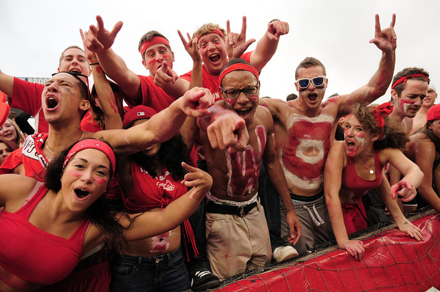

Stony Brook’s first NCAA football game took place in 1983, and the University celebrated its first official University-sanctioned Homecoming Weekend the following year. A highlight of the weekend is the Homecoming King and Queen Competition, along with the Homecoming Parade. In 2002, Stony Brook’s annual Homecoming Weekend was named Wolfstock. Events at Wolfstock over the years have included the football game, Homecoming Parade, Float Contest, Wolfstock Village, alumni get-togethers, music, children’s rides, hospitality tents, and expo areas.

Stony Brook welcomes the author of the First-Year Reading to campus every Fall Semester. The author gives various presentations, interviews, and book signings throughout the day. There is also an awards luncheon with the Creative Expressions Assignment Winners.
This tradition brings together members of the campus community for the first weekend of November each year to examine critical issues and make recommendations to improve campus life. Campus Life Time, extended Library hours, the Student vs. Faculty/Staff Challenge, and the WebEvent Calendar are direct outgrowths of this initiative.